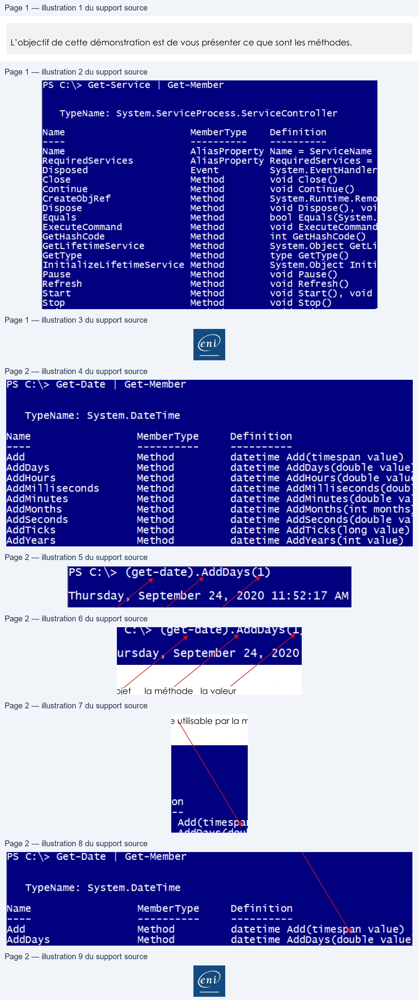

Transcription du document du Drive TSSR. La mise en forme est adaptée au Web ; les compléments IA du portail sont présentés séparément.
Initiation au Scripting avec PowerShell
Démonstration 03 du module 2
L’objectif de cette démonstration est de vous présenter ce que sont les méthodes.
De la même façon qu’un objet contient des propriétés, les méthodes qu’il contient vont permettre
d’effectuer des actions sur la totalité de l’objet, sur une propriété ou de faire des actions de
conversion par exemple.
• Les méthodes sont révélées par la commande Get-Member.
•
Les méthodes sont des actions à la différence des propriétés qui, elles, sont statiques.
La méthode Start a une portée sur tout l’objet service.
L’utilisation d’une méthode se fait en ayant les informations à disposition telles que l’objet sur lequel
on souhaite exécuter la méthode ou la propriété de l’objet sur laquelle on va exécuter cette
méthode.
Page 1/2
© ENI – Tous droits réservés
PS C:\> Get-Service
|
Get-Member
TypeName:
System.ServiceProcess.ServiceController
Name
MemberType
Definition
Name
AliasProperty Name = ServiceName
RequiredServices
AliasProperty RequiredServices =
Disposed
Event
System. EventHandler
Close
Method
void Close()
Continue
Method
void Continue()
CreateObjRef
Method
System.Runtime.Remo
Dispose
Method
void Dispose(),
voi
Equals
Method
bool
Equals(System.
ExecuteCommand
Method
void
ExecuteCommand
GetHashCode
Method
int GetHashCode()
GetLifetimeservice
Method
System.Object GetLi
GetType
Method
type GetType()
InitializeLifetimeService Method
System.Object Initi
Pause
Method
void Pause()
Refresh
Method
void Refresh()
Start
Method
void Start(),
void
Stop
Method
void Stop()
En
Initiation au Scripting avec PowerShell
L’objet System.DateTime dispose de méthodes permettant de faire varier les valeurs obtenues par la commande Get-Date.
Pour ajouter un jour au résultat, on utilise la méthode Add-Days suivie du nombre de jours que l’on souhaite ajouter.
L’objet
la méthode la valeur
L’objet est contenu entre parenthèses ; il est suivi d’un point puis de la méthode, ce qui indique que
l’on utilise la méthode de cet objet.
La valeur fournie entre parenthèses de la méthode doit être d’un type utilisable par la méthode.
Page 2/2
© ENI – Tous droits réservés
PS
C:\>
Get-Date
Get-Member
TypeName:
System.DateTime
Name
MemberType
Definition
add
Method
datetime Add(timespan value)
AddDays
Method
datetime AddDays(double value
AddHours
Method
datetime AddHours(double valug
AddMi 11iseconds
Method
datetime AddMilliseconds(doub
AddMinutes
Method
datetime AddMinutes(double va
AddMonths
Method
datetime AddMonths(int months
AddSeconds
Method
datetime AddSeconds(double va
AddTicks
Method
datetime AddTicks(long value)
AddYears
Method
datetime AddYears(int value)
PS C:\> (get-date).AddDays(1)
Thursday,
September
24,
2020 11:52:17 AM
PS
C:\>
Get-Date
Get-Member
TypeName:
System.DateTime
Name
MemberType
Definition
Add
Method
datetime Add(timespan value)
AddDays
Method
datetime AddDays(double value
En
